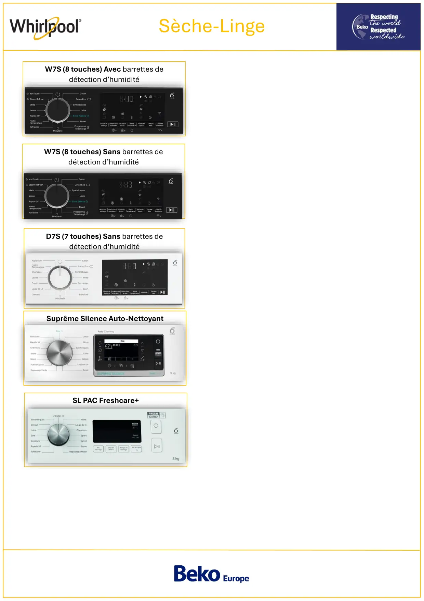

Seche linge Whirlpool

Sèche-LingeSuprême Silence Auto-NettoyantD7S (7 touches) Sans barrettes dedétection d’humiditéW7S (8 touches) Avec barrettes dedétection d’humiditéW7S (8 touches) Sans barrettes dedétection d’humiditéSL PAC Freshcare+
1 / 1Liens de ce document (5)
PDFProg Test seche linge PAC Whirlpool Premium AutoCleaning5 p.PDFProgTest seche linge PAC Whirlpool ElectroniqueD7S 7touches3 p.PDFProgTest seche linge PAC Whirlpool ElectroniqueD7S 8touches avec barette humidité3 p.PDFProgTest seche linge PAC Whirlpool ElectroniqueW7S 8touches sans barette humidité3 p.PDFProg Test seche linge PAC Whirlpool Freshcare+5 p.